Swarm Intelligence
Swarm intelligence is an emerging field of biologically-inspired
artificial intelligence based on the behavioral models of social
insects such as ants, bees, wasps, termites etc. TechFerry has
published this article to nail down what research has been done on
Swarm Intelligence. This article covers Swarm Intelligence Basic
Overview, Swarm Aspects, Swarm Machinary, Swarm Technologies, Swarm
Languages, Swarm Frameworks, Swarm Tools, Swarm Use Cases.
A Swarm is a configuration of tens of thousands of individuals
that have chosen their own will to converge on a common goal. Swarm
Intelligence is the Complex Collective, Self-Organized, Coordinated,
Flexible and Robust Behaviour of a group following the simple rules.
| Swarm Intelligence: |
| 1) One Million Heads, One Beautiful Mind |
| 2) Agents interacting locally with each other and the
environment |
| 3) Agents follow simple rules |
| 4) Emergence of Itelligent, Collective,
Self-organised, Global behaviour |
| 5) Decentralized and artificial or natural |
| 6) Very adaptive |
| 7) Randomness enables the continuous exploration of the
alternatives and it ensures that the better solution will be found.
|
| 8) Behavior relies on stochastic choices made by the agents
which are a balance between
a simple perception-reaction model and a random model. |
| 9) Application of bio-inspired concepts |
| 10) Large mass of the agents is a must. |
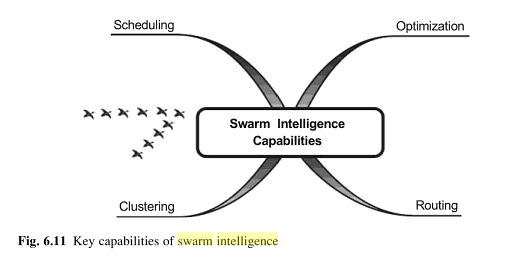
| Swarm Intelligence Capabilities: |
1) Scheduling
/ Load Balancing: The emphasis is on the relative
position of the job rather than its direct predecessor or its
direct successor in the schedule and summation evaluation
rule / global pheromone evaluation rule is followed.
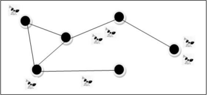
Fig: Ant Colony Load Balancing - AntZ
|
2) Clustering: A cluster is a
collection of agents which are similar and are
dissimilar to the agents in other clusters.
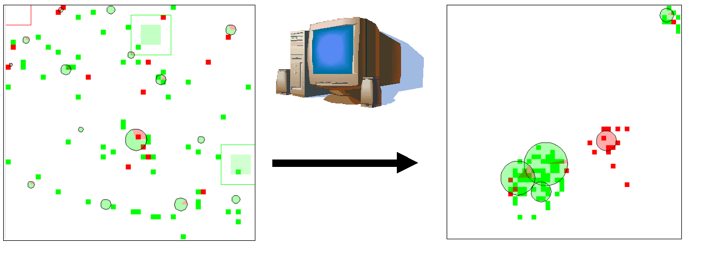
Fig: Formation of
cluster of corpses to clean up the ants' nests
|
3) Optimization: An optimization problem is
the problem of finding the Best Solution / Minimal Cost
Solution from all the feasible solutions.
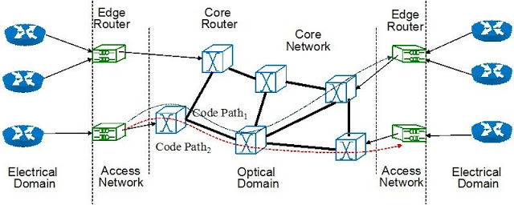
Fig:
optical network optimization - A practical application of
particle swarm intelligence
|
4) Routing: This is based on the principle that
backward ants utilize the useful information gathered by the
forward ants on their trip from source to destination.
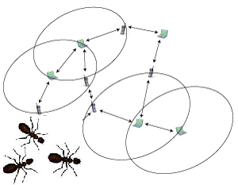
Fig: The
AntHocNet routing algorithm for MANETs (mobile ad hoc
networks)
|
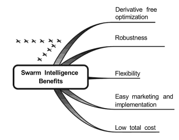
| Advantages: |
| 1) Flexible: The colony respond to internal
disturbances and external challenges.
|
| 2) Robust: Tasks are completed even if some
agents fail.
|
| 3) Scalable: From a few agents to
millions
|
| 4) Decentralized: There is no central control
in the colony.
|
| 5) Self-organized: The solutions are emergent
rather than pre-defined.
|
| 6) Adaptation: The swarm system can not only adjust to predetermined stimuli but also to new stimuli.
|
| 7) Speed: Changes in the network can be
propagated very fast.
|
| 8) Modularity: Agents act independently of
other network layers.
|
| 9) Parallelism: Agents' operations are
inherently parallel.
|
| Disadvantages: |
| 1) Behaviour: Difficult to predict the
behaviour from the individual rules.
|
| 2) Knowledge:
The functions of colony could not be understood with the knowledge of functioning of a agent.
|
| 3) Sensitivity: Even a small change in the simple rules
results in different group level behaviour.
|
| 4) Action: Agent behavior looks like
noise as action of choice is stochastic.
|
|
Swarmic Freedom vs Random Freedom:
|
| 1) The freedom of the swarm (i.e. Swarmic Freedom) is
maintained by the swarm intelligence algorithms, whereas the freedom of the agents (i.e. Random Freedom) is maintained by the randomised
algorithms. |
| 2) Swarm Freedom naturally enables the system to
maintain recognisable fidelity to the original input whereas
when more freedom is granted to the randomised algorithm, the
algorithm soon begins to deviate excessively. |
|
Weak vs. Strong Computational Creativity In Swarm
Intelligence Systems:
|
| 1) In Strong Computational Creativity, artificial
intelligence is strong whereas in Weak Computational
Creativity, artificial intelligence is weak. |
| 2) In Strong Computational Creativity, the machines are expected to be creative and to have
genuine understanding and other cognitive states as well as
capability of conscious thinking and therefore the stress
for the emergent creativity is on the significant impact of
both freedom and constraint whereas Weak Computational
Creativity does not go beyond exploring the simulation of
human creativity. |
| 3) Swarm intelligence via its infamous struggle
identifies a suitable balance between exploration and
exploitation phases to provide a valuable mean
artificial creativity approach. |
| General Swarm Principles: |
| 1) Proximity principle: The basic units of a
swarm should be capable of giving the respond back to to environmental
variance triggered by interactions among
agents. However, some fundamental behaviors are shared such
as living-resource searching and nest-building. |
| 2) Quality principle: A swarm should be able
to respond to quality factors such as determining the safety
of a location. |
| 3) Principle of diverse response: Resources should not be concentrated in a narrow region.
The distribution should be designed so that each agent will be maximally protected
facing environmental fluctuations.
|
| 4) Principle of stability: The population
should not change its mode of behavior every time the
environment changes. |
| 5) Principle of adaptability: The swarm is
sensitive to the changes in the environment that result
in different swarm behaviour. |
| Most Common Principles: |
| 1) Individuals are attracted to each other. |
| 2) When they come closer in space, they start to focus
in the same direction. |
| 3) They avoid collision by moving away from each
other. They keep certain distance from each other. |
| 4) Individuals
interact with local, near neighbours and trust only a few of
them. This rule is known as self-organization.
|
| Business Swarm: |
| 1) Swarm intelligence can be used by any business or
social cause. It could give you cost efficiency advantage. |
| 2) Swarm Intelligence emerges when individuals unite
to a cause. |
| 3) Individuals unite to a cause when the goal is
clearly defined, immediately seen as achievable, touches the
individuals who are ready to jump in it without asking
anyone's permission and electrify individuals to shoot. |
| 4) Your oganization must be optimized for speed,
trust and scalability. |
| 5) Build a scafffolding that supports the swarms. |
| 6) Your organization must be decentralized with small
distributed responsibilities. |
| 7) Different approaches must be carried out in parallel. |
| 8) Make the environment full of fun. |
| Distribution: |
| Agents choose their actions and then carry them out.
|
| Stigmergy: |
| 1) Agents indirectly interact via environmental modification, the phenomenon known as stigmergy. |
| 2) Stigmergy is basically the context awareness. |
| 3) Stigmergy decouples agents' interactions. |
| Cooperation: |
| 1) Agents cooperate to emerge a non-deterministic, complex collective behaviour. |
| 2) Agents cooperate in order to solve complex tasks. |
Self Organization:
The bases
of self-organization are:
|
| 1) Positive feedback (amplification): It promotes
better solutions by allocating to them more agents. |
| 2) Negative feedback (for counter-balance and
stabilization): It may avoid that all individuals converge to
the same behavior or to the same state. |
| 3) Amplification of fluctuations (randomness, errors,
random walks) |
| 4) Multiple social interactions |
| 5) There is a continuous tension between positive
feedback and negative feedback and this is what actually
happens in most known self-organization phenomena, e.g.,
cellular automata, markets, complex networks, etc. |
| Emergence: |
| 1) Complicated intelligent behaviour emerges from
simple agents following simple rules. |
| 2) Weak Emergence: You can trace the agent
behaviour from emergent properties.
|
| 3) Strong Emergence: Agent behaviour is not
directly traceable from emergent behaviour.
|
| Imitates Nature: |
| Artificial swarm is designed by imitating the natural swarm behaviour. |
| General swarm behaviour: |
| 1) Foraging: To search for the food |
| 2) To construct the nest |
| 3) To move in the environment |
| A Swarm Machinery is all about Agents, Interactions and the
Environment. |
| Environmental mechanism: |
| Agents indirectly interact with each other via environmental modification which serves as external memory.
The phenomenon is known as Stigmergy
which means stimulation by work. |
| Interaction mechanism: |
| There are no direct communications but indirect
interactions between the agents via environmental modification known as stigmergy / stimulation by work. |
| Activities of agents |
| 1) Action is stochastic choice based, a balance between
a simple perception-reaction model and a random model |
| 2) Agents react on the basis of simple perception-reaction
model according to which individuals perceive the local
properties of the environment and also affect the properties
of the environment to some extent. |
| 3) Agents move in environment |
|
Particle Swarm Optimization: |
| Inspiration: Particle Swarm Optimization is
inspired by the social foraging behavior of some animals such
as flocking behavior of birds and the schooling behavior of
fishes. |
| Strategy: The goal of the algorithm is to have
all the particles locate the optima in a multi-dimensional
space, initially assigned with random position and random
velocity, gradually advancing towards the local optima
through the use of exploration and exploitation of good,
known positions in space. |
| PSO Rules: |
| 1) Separation: Do not run into flockmates.
|
| 2) Alignment: Each align their own heading to the
average of the neighbours.
|
| 3) Cohesion: Move towards the average position
of neighbours.
|
| 4) Desire factor per bird for roosting areas:
It is the need of roosting or swarming which
gets stronger if a defined roosting area is approachable.
|
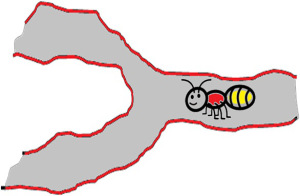
|
Ant System: |
| Inspiration: It is inspired by the pheromone
communication of the blind ants regarding a good path between
colony and the food source in an environment, the phenomenon known as
stigmergy. The probability of the ant following a certain
route is not only a function of pheromone intensity but also
a function of distance to that city, the function known as visiblity. |
| Strategy: The objective of the strategy is to
exploit historic i.e. pheromone based and heuristic information to
construct candidate solutions each in a probabilistic
step-wise manner and fold the information learned from
constructing solutions into the history. The probability of
selecting a component is determined by the heuristic
contribution of the component to the overall cost of the
solution and the quality of solution and history is updated
proportional to the quality of the best known solution. |
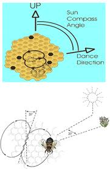
|
Bees Algorithm: |
| Inspiration: It is inspired by the foraging
behaviour of the honey bees. The hive sends out the Scout
bees which when locate nectar (a sugary fluid secreted within flowers), return to the hive and
communicate the other bees the fitness, the quality, distance
and direction of the food source via waggle dance. |
| Strategy: The objective of the algorithm is to
locate and explore good sites within a problem search space.
Many scout bees are sent out, each iteration is always in search of
additional good sites which are continually exploited in the
a local search application. |
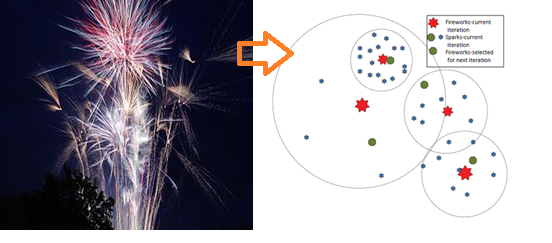
|
Fireworks Algorithm: |
| Inspiration: It is inspired by observing the
firework explosion. |
| Strategy: In the FA, two explosion (search)
processes are employed and mechanisms for keeping the diversity
of sparks are also well designed. The explosion process of a
firework can be viewed as a search in the local space around
a specific point where the firework is set off through the
sparks generated in the explosion. |
| 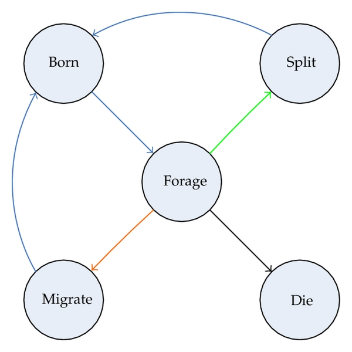
|
| Fig: State transition in lifecycle model of bacteria in
BFO |
|
Bacterial Foraging Optimization Algorithm: |
| 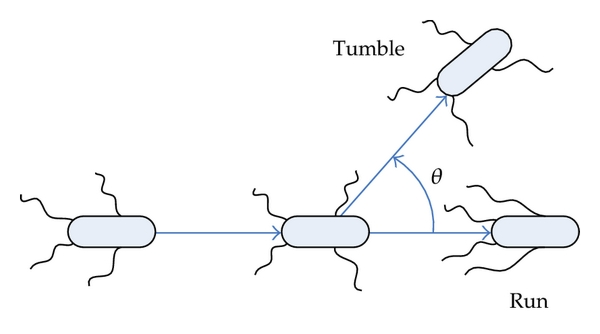 |
| Fig: Chemotactic behavior of E. coli - run and
tumble |
| Inspiration: It is inspired by the the
foraging behavior of E.coli bacteria that will perceive
chemical gradients in the environment (such as nutrients) and
move towards or away from the specific signals. |
Strategy: The objective of the algorithm is to allow cells
to stochastically and collectively swarm toward optima
through a series of three processes:
- Chemotaxis: Here the cost of the cells is
inversely proportional to the proximity to other cells and
cells move along manipulated cost surface area one at a time.
- Reproduction: Only those cells contribute to
this phase who remain healthiest in their overall
life-time.
- Elimination-dispersal: Some cells are
discarded and new cells are inserted.
|
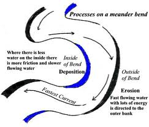
|
River Formation Dynamics Algorithm: |
| Inspiration: RFD is inspired by how water
forms rivers by eroding the ground and depositing sediments.
As water transforms the environment, altitudes of places are
dynamically modified, and decreasing gradients are
constructed. The gradients are followed by subsequent drops
to create new gradients, reinforcing the best ones. By doing
so, good solutions are given in the form of decreasing
altitudes. |
| Metaphor: A set of drops placed at the
starting point is subjected to gravitational force that
attracts them to the center of the earth. As a result, these
drops are distributed throughout their environment, seeking
the lowest point or the sea. As a result, the riverbeds
are formed, often containing many meanders. |
| Strategy: RFD utilizes this idea into the
graph theory problems (for example, the problems of finding a
minimum distance tree and finding a minimum spanning tree in
a variable-cost graph), creating a set of agent-droplets
moving on the edges between nodes according to the decreasing
gradient of the nodes and exploring the environment for the
best solution following the mechanisms of erosion and soil
sedimentation that relate to the altitude assigned to each
node. |
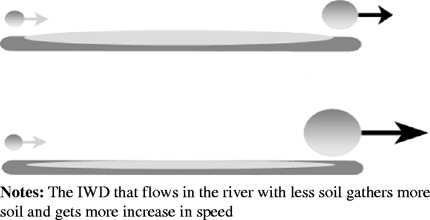
| Intelligent Water Drops: |
| Inspiration: Intelligent water drops algorithm
(IWD) inspired by natural rivers and how they find almost
optimal paths to their destination. These near optimal or
optimal paths follow from actions and reactions occurring
among the water drops and the water drops with their
riverbeds. |
| Metaphor: This is achieved by three important
characteristics of water drops. First, they have a velocity
that allows them to gather soil from the river bed, thus the
higher the speed of drops, the larger the amount of soil it
carries. In this way the water drop cleanse the path for the
forthcoming drops. Second, the velocity of water drops
increases more on paths with minimal soil than on one with the
high soil. Third, when a single water drop has to select a
path, it selects the one with the lowest amount of soil. |
| Strategy: Several artificial water drops
cooperate to change their environment in such a way that the
optimal path is revealed as the one with the lowest soil on
its links. The solutions are incrementally constructed by the
IWD algorithm. |

|
Gravitational search algorithm: |
| Inspiration: Gravitational search algorithm
(GSA) is a newly developed stochastic search algorithm based
on the Newtonian gravity- "Every particle in the universe
attracts every other particle with a force that is directly
proportional to the product of their masses and inversely
proportional to the square of the distance between them" and the
mass interactions. |
| Strategy: In this approach, the search agents
are a collection of masses which interact with each other
based on the Newtonian gravity and the laws of motion in
which all of the objects attract each other by the gravity
force, while this force causes a global movement of all
objects towards the objects with heavier masses. The heavy
masses correspond to good solutions of the problem. |
|
Ant based Clustering Algorithm: |
| 1) ACO is finding the shortest way by the ants and ACO
clustering is the finding the shortest way between the data
items of a given data-set to be clustered. For example: ACO
based documents clustering is finding the most
alike(the shortest way between the documents) documents. |
| 2) Seen purely as a clustering algorithm, ant-based
clustering performs well in comparison to the other popular clustering
methods of k-means, agglomerative hierarchical clustering and
one dimensional self-organising maps. |
|
SoS-ACO (Sense of Smell - Ant Colony Optimization): A
Bio-inspired algorithm for searching Relationships in Social
Networks. |
| 1) It accelerates the search for relationships among
elements present in social networks. |
| 2) It involves locating the chain of reference that
leads from one person to another by accelerating the search
for routes between two nodes that belong to a graph that
represents a social network. |
| 3) SoS-ACO is based on the way the ants move when they
search for food. |
| 4) The application of this algorithm to real social
networks obtains an optimal response in a very short time
(tens of milliseconds). |
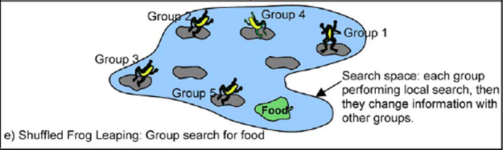
| Shuffled Frog-Leaping |
| Metaphor: The SFL algorithm involves a
population of possible solutions defined by a set of frogs
(i.e. solutions) that is partitioned into subsets referred to
as memeplexes. The different memeplexes are considered as
different cultures of frogs, each performing a local search.
Within each memeplex, the individual frog holds ideas, that
can be influenced by the ideas of other frogs, and evolve
through a process of memetic evolution. After a number of
memetic evolution steps, ideas are passed among memeplexes in
a shuffling process. The local search and the shuffling
processes continue until convergence criteria are satisfied. |
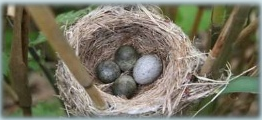
|
Cuckoo Search: |
| CS is an optimization algorithm inspired by the
obligate blood parasitism of some cuckoo species by laying
their eggs in the nests of other host birds. |
| Methaphor: Cuckoos have an aggressive
reproduction strategy that involves the female laying her
fertilized eggs in the nests of other species so that
surrogate parents accidently raise her brood. Sometimes the
cuckoo's egg in the host nest is discovered, the surrogate
parents either throw it out or abandon the nest and builds
their own brood elsewhere but otherwise once the first cuckoo
chick is hatched, it first evicts the host eggs by blindly
propelling the eggs out of the nest so that its share of food
is increased. |
| Protoswarm: |
| 1) It is a programming Language for programming Multi-robot System
Using the Amorphous Medium Abstraction. |
| 2) Inspiration: It is inspired by the
continuous space-time model of Proto and extends this type of
model to program swarm of robots.
|
| 3) Amorphous Medium Abstraction is achieved
using two mechanisms: a language, called Protoswarm, which
provides continuous space and time semantics, and a runtime
library which approximates the semantics on the given
hardware.
|
|
Swarm: |
| 1) It is a true distributed programming language. |
| 2) The Fundamental Concept behind Swarm: We
should move the computation, not the data.
|
| 3) The Swarm Prototype: It is a
stack-based language, similar to a primitive version of the
Java bytecode interpreter and is now implemented as a Scala
library.
|
|
|
| StarLogo: |
| 1) A programming language and programming environment of
decentralized multi-agent system. |
| 2) StarLogo is a programmable modeling environment
for exploring the working of decentralized systems -
systems which are organized without an organizer, coordinated
without a coordinator. |
| 3) With StarLogo, you can model (and gain insights
into) many real-life phenomena, such as bird flocks, traffic
jams, ant colonies, and market economies. |
| Growing Point Language: |
| 1) It is a programming language to program amorphous computing
medium to generate highly complex and prespecified patterns. |
| 2) It is a programming
language that facilitates the self-organisation of complex
pre-specified patterns, such as the interconnection structure
of an arbitrary electrical circuit. |
| 3) Inspiration: It is inspired by a botanical
metaphor: a growing point is a locus of activity that can
propagate through the amorphous computing medium by
transferring its activity from one computing element to a
neighbouring one, according to the growing point's tropism
(pheromone).
|
|
ASSL (Autonomic System Specification Language): |
| 1) ASSL is a framework for formally specifying and
generating autonomic systems. |
| 2) AS are formal executable models with an
interaction protocol and autonomic elements. |
| 3) In an endeavor to specify ANTS
(Autonomous Nano-Technology Swarm) with ASSL, we have
emphasized modeling ANTS' self-management policies such as
self-configuring, self-healing, self-scheduling, and emergent
self-adapting. In addition, we have developed specification
models for the ANTS safety requirements. |
| Swarm
Organ: A theoretical framework for organising the swarm of Gene
Regulatory Network-controlled agents which display Adaptive
Tissue like organization. |
|
DDDAS (Dynamic Data Driven Application System) for Artificial Swarm
Control: |
| 1) It is the ability to dynamically incorporate
additional data into an executing application, and in
reverse, ability of an application to dynamically steer the
measurement process. |
2) Two application designs have been proposed to control the swarm
application via DDDAS: Swarm
Application Architecture integrated with DDDAS and DDDAS Swarm Control Framework.
3) Swarm
Application Architecture:
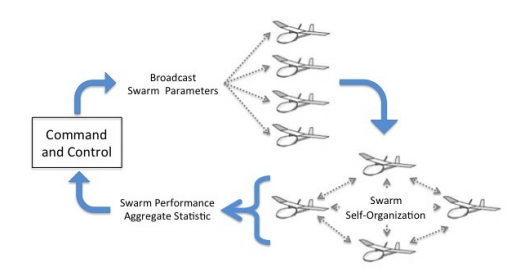
Here a swarm
application has been integrated with DDDAS to control
several agents by broadcasting one or few swarm parameters
and then report application performance to the central
controller as a single, aggregated statistic.
|
4) DDDAS Swarm Control Framework: DDDAS
framework with feedback control loop for swarm control
allows the controller to appropriately adjust agents'
parameters for the application.
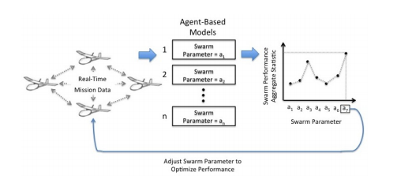
- This framework incorporates the swarm application architecture.
- It facilitates improved analytic, predictive, and
decision-making capabilities of swarm application by
Synergestic Feedback Loop which is achieved by executing the same
swarm application in multiple parallel simulations, each
utilize the same real data with different agent-level
control parameters.
|
|
A Distributed Framework for Supporting 3D Swarming
Applications: |
| 1) It supports swarming within in-flight sensor
networks (swarm of quad copters in this study), which require
coordinated movement in 3D space. |
| 2) High impact 3D swarming applications include
autonomous mapping, surveying, servicing, environmental
monitoring and disaster site management. |
| 3) A general hardware setting for controlling swarms
of in-flight sensor networks has been proposed by combining IoT (Internet of Things)
technology with swarm robotics. |
|
A General Modeling Framework for Swarm: |
Inspiration:
1) In the majority of the research
on swarm intelligent systems, the moving agents in the swarm
are modeled as simple reactive agents. Current swarm models
comprise a little intelligence to fully exploit the
potential of swarms.
2) The
analysis of a swarm intelligence system typically focuses on
the dynamics of the swarm as a whole, rather than on the
dynamics of the individual agents. |
Concept:
- The most prevalent control problem in
swarm literature: Aggregation and coordinated motion of
the swarm-bot are studied in this reasearch.
- This framework uses two major swarm
intelligence methods in optimization and control, namely
Particle Swarm Optimization (PSO) and Artificial Potential
Fields for Swarm Aggregation.
|
|
A Unified Framework for Swarm Based Image Analysis: |
| 1) It is only a proposal and currently there is no
way of implementing swarm algorithm for image ananlysis. |
| 2) The main goal is to achieve a global perception of
one image as the emergent sum of local perceptions of the
whole colony. |
| 3) Unlike ACO and PSO, this focuses on constructing
different rules and interactions for obtaining a specific
emergent behavior, which is then used in an image analysis
context. |
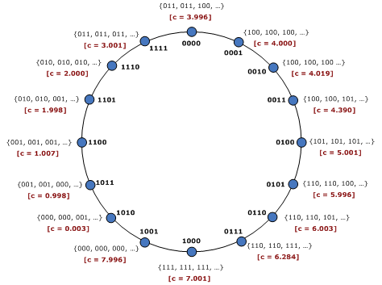 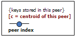 Figure:
No direct association among a peer index and the keys stored by
the peer with each key is stored in a peer whose centroid is very
close to that key value
|
Self-Chord: It is a Bio-inspired P2P Framework for
Self-organized, Distributed Grid Information System. |
| 1) Self-Chord is a P2P system that inherits Chord-like structured systems for the construction
and maintenance of an overlay of peers, but derives the
autonomy
behavior, self-organization and capacity to adapt to a
changing environment features from ant-inspired algorithms for key ordering and discovery. |
| 2) Peer indexes and resource keys are uncorrelated,
which opens the possibility to give a semantic meaning to
keys and perform class (or range) queries. |
| 3) Mobile agents go through the Chord ring and
order resource keys. |
| 4) Benefits: 1) Dynamic behavior (management
of perturbations, such as the connection of new peers), 2)
Load balancing, 3) Possibility to serve range queries, as the
keys can be assigned semantic values.
|
|
So-Grid: It is a Bio-Inspired P2P Framework for Self-organized,
Distributed Grid Information System. |
| 1) A set of bio-inspired algorithms tailored to the
decentralized construction of a Grid information system that
features adaptive and self-organization characteristics. |
2) So-Grid provides two main functionalities which is
being exploited continuously and concurrently:
- Logical Reorganization of Resources, inspired by the behavior
of ants and termites, is done by moving and collecting the
items within their environment and then spatially sorting resource
descriptors over the Grid according to their classification.
- Resource Discovery, inspired by the ants mechanism in which they search for food sources by following the
pheromone traces left by other ants.
|
Antare:
1) It is an Ant-Inspired P2P Information System for a Self-Structured Grid.
2) It is
designed to effectively disseminate and reorganize
resources to speed up resource discovery operations in a
dynamically changing environment. |
| Myra:
A cross-platform Ant Colony Optimization framework written in
Java |
|
AntCar: A program for solving the car sequencing problem. |
| The
Swarm Framework: |
| 1) The ultimate Platform as a Service used for the distributed
computation in the cloud. |
| It is going
much further than systems like Google App Engine in relieving
the programmer from the difficulties of cloud computing. |
The Swarm Application Framework (SAF):
A tool that allows
the engineer to design swarm applications from the top down,
so the design problem becomes more manageable. |
A prototype of the framework:  |
| 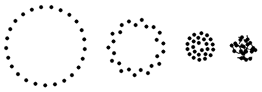 |
The goals of SAF are: |
- To make the development of swarm applications
intuitive.
- To allow the engineer to design swarm applications
from the abstract (swarm) level instead of the individual
(agent) level.
- To modify the swarm behavior with top-level
rules instead of modifying multiple low-level rules.
- To make rule abstraction a simple process, thus
promoting the use of rule hierarchies.
- To provide a collection of modules that developers can
use to quickly build new applications.
- To enable the engineers to focus on the behavior and
properties of the swarm, rather than on the low-level details
of an agent behavior.
- To create the swarm applications via the Rule abstraction mechanism in SAF is
much easier than creating them from scratch.
|
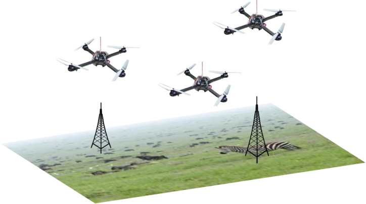
|
Route Optimization of Unmanned Aerial Vehicles (UAV): |
- UAV is an aircraft without the onboard presence of
pilots.
- It includes software and hardware agents that
communicate or displace in an optimal manner.
- The UAVs are engaged in a simulated area coverage
scenario with a defined set of waypoints. The objective is
to find the shortest route that connects all the waypoints
in order to optimize the time and the cost of the
UAV’s flight.
- Ant system algorithm is used for UAVs route
optimization.
- It is being highly used in commercial aplications
such as telecommunications, ground traffic control, search
and rescue operations, and crop monitoring among others.
- UAVs assist with frost protection, irrigation and
crop management in agriculture.
- Together with Mobile Ground Station systems, UAVs
offer persistent surveillance, enhanced situational
awareness, and actionable intelligence to the law enforcement
and the security personnel.
|
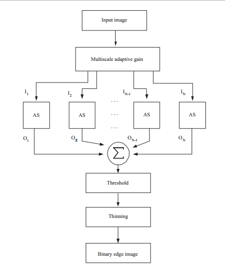
|
Ant System-based Adaptive Edge Detector: |
- Two algorithms- Ant System Algorithm for Edge
Detection and Ant System-based Broken-edge Linking
Algorithm inspired by the foraging behavior of natural ant
colonies are used.
- Ant System Algorithm for Edge Detection: This
method requires that a set of images is extracted from the
original grayscale image using a nonlinear image
enhancement technique called Multiscale Adaptive Gain, and
then the modified AS algorithm is applied to detect the
edges on each of the extracted images.
- Ant System-based Broken-edge Linking
Algorithm: It is complementary to edge detection and is
used to connect the broken edges in order to form the
closed contours (outline) that separate the regions of
interest.
- This model is created with a bottom-up approach,
using the rules of local interactions between the ants and
the environment (digital image). This model is
decentralized, self-organized, autonomous and adaptive to
the changes in the environment.
|
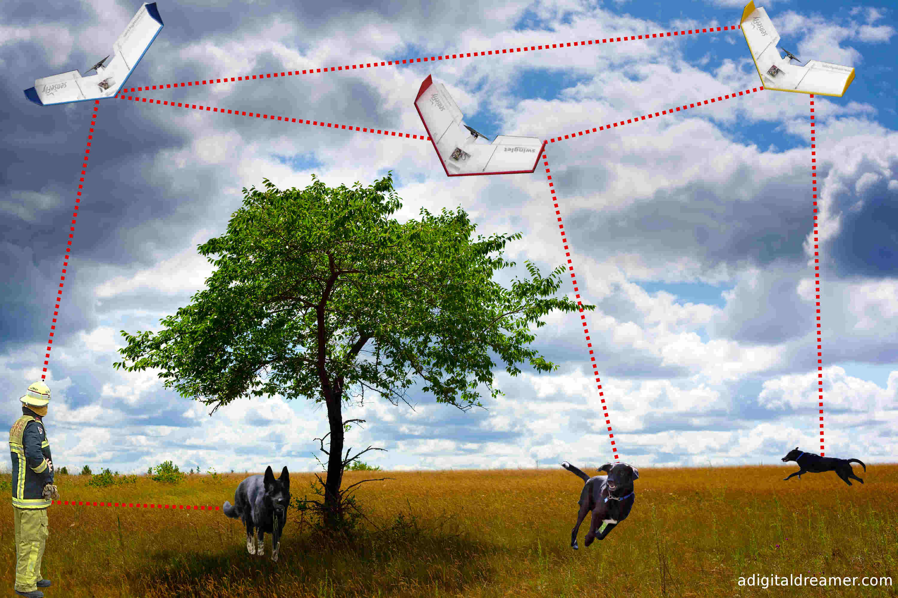
|
Distributed Task Allocation in Large, Autonomous,
Multirobot Swarm System: |
- Distributed Bees Algorithm (DBA) is used which is
inspired by the foraging behaviour of colonies of bees in
nature.
- When the bees find the food source, the scout bees
return to the hive and perform a famous waggle dance in
order to recruit other bees. The information about the
richness and location of the source is passed using direct
communication. In the same way, here the robots are
designed to use broadcast communication to inform other
robots in the range about the estimated location and the
quality of the found target.
- The objective of the proposed algorithm is to
assign the robots in a swarm to the found targets in such a
way that the final distribution is proportional to the
targets’ qualities.
- Distributed Bees Algorithm provides the robot swarm
with scalability in terms of the number of robots and
number of targets and with adaptability to a
non-uniform distribution of the targets’ qualities.
- The bottom-up design topology inherent to
bio-inspired multirobot systems provides them with one or
more of the following features, such as being autonomous,
scalable, robust and adaptive to changes in their
environment.
|
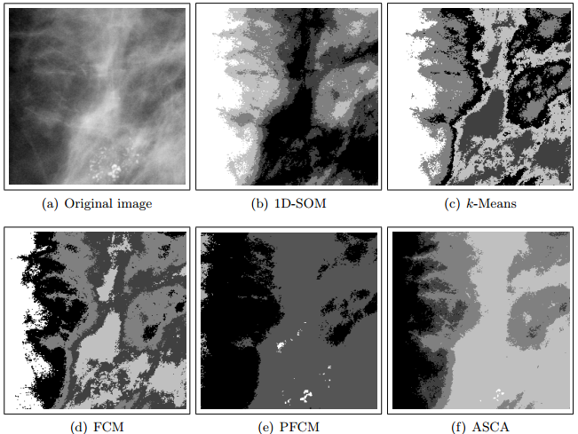
Figure: Comparison of the segmentation results for a ROI
mammogram, 256 × 256 pixels. The ASCA (Ant System-based Cluster Algorithm) extracted five clusters;
|
Cluster Analysis for Image Segmentation: |
- Image segmentation is an important preprocessing
step in applications of computer vision. The objective is
to partition the image into homogeneous regions that share
certain visual characteristics.
- ASCA (Ant System-based Clustering Algorithm) is
used which consists of three consecutive parts, namely:
a) Pheromone accumulation, b) Local pheromone summing, and
c) Data labeling
- a) Pheromone accumulation is used to create a
pheromone map of the data set to be clustered and b) Local
pheromone summing in which smooth pheromone surface is
obtained by locally summing all the pheromone trails and c)
Data labeling in which all the nodes are grouped in their
respective cluster and the all the clusters are
extracted from the data set.
- It is used to extract the pixel clusters with a
similar intensity level of grey.
- This tool is used in computer vision applications
such as mammography for the cancer risk analysis and breast
cancer where the less representative pixels are precisely
the most interesting because they represent a variation
with respect to healthy tissue.
- The important feature of the proposed ASCA
algorithm is automatic extraction of clusters.
- ASCA algorithm outperformed 1D-SOM, k-Means, FCM
and PFCM algorithms in detection of small, atypical regions
of the image.
|
| Possible applications of Swarm Intelligence may be limited
only by imagination. |
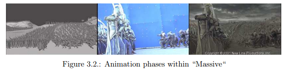
|
Behavioral Animation: |
- The particle swarm technology concepts are being
applied in computer graphics area and can be found
in Batman Returns (1992), The Lion King (1994) and From
Dusk Till Dawn (1996).
- The most impressive usage are probably the immense
battle sequences in the trilogy Lord of the Rings where
about 250,000 individual fighters.
- For making this possible a new software was written
named MASSIVE which controls this mass of agent
technology-equipped computer actors and their
states.
|
|
Distributed Perceptive Networks - These are the examples
of emergence of intelligence and artificial swarm intelligence in artificial complex
systems. |
- A system comprising hundreds or thousands of motes
linked by radio transceivers and sensors can spontaneously
emerge as a perceptive network and a mote is a
micromachine which is the unit of SmartDust,
each unit installed with TinyOS.
- Multi-hop networking approach is followed and as a
result, parallelism is achieved so that if a particular
mote stops functioning, there is enough redundancy and
parallelism in the network that other motes reconfigure the
connectivity to bypass that mote.
- The technology of placing the brain, the sensors,
and the actuators of an artificial intelligent structure in
differnt locations known as Pervasive Computing.

|
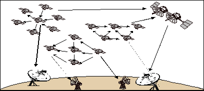
|
Micro-satellite Swarm: |
- Bluetronix is looking to develop control packages
and communications suites founded upon swarm intelligence
algorithms enabling collaboration of micro-satellite swarms,
tasking of individuals, and fuzzy system
identification for adaptive sensor fusion dictating rule
based commands.
- Individual satellites, each equipped with their own
rule-based controller, will perform assigned sub-tasks
based on their own directives.
- This design could be easily integrated on a wide
variety of mobile platforms including satellites, Earth
Science sensor networks, ground stations, and small
aircraft, all connected in an ad-hoc fashion.
|
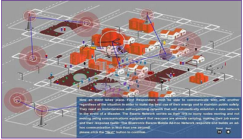
|
Bluetronix Swarm Mobile Ad Hoc Network: |
| The Swarm Autonomous Routing Algorithm (SARA) is
performed by simple communication node devices for node to
node communications in a network, especially a Mobile Ad hoc
NETwork (MANET). These networks are decentralized with the
ability to scale to 100s to thousands of connections. They
also self-learn and organize as they operate and adapt as new
and old nodes enter and exit the network under dynamic
conditions. |
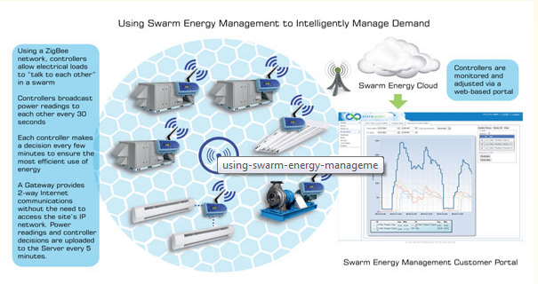
| Robust,
Flexible, Easy-to-use, Swarm Energy Management: |
REGEN Energy’s wireless automated demand management
and demand response controllers can be easily installed onto
any electrical heating, cooling or discretionary electrical
load. Once installed, the REGEN controllers work together
like a swarm of bees, intelligently communicate and
manage the duty cycles of the loads being controlled.
Utilizing REGEN’s patented swarm-based intelligence, the
controllers dramatically reduce peak electrical demand by up
to 25% in commercial and light industrial properties and
allow for effective scheduling of overnight and weekend
loads.

Fig: Swarm Energy Management employs swarm logic to
allow equipments in buildings to communicate and coordinate to
minimize the number and size of loads unnecessarily running
concurrently, thereby reducing peak demand.
|
|
SLAM with PSO: - Simultaneous
Localization and Mapping with Particle Swarm Optimization |
- Estimate the pose (position and orientation) of a robot and map the
environment at the same time.
- Learning a map and locating the robot
simultaneously.
- Localization: Inferring the location given a map.
- Mapping: Inferring a map given the locations of robot.
- FastSLAM is a framework for simultaneous
localization using a Rao-Blackwellized particle filter. In
FastSLAM, particle filter is used for the mobile robot pose
(position and orientation) estimation, and an Extended
Kalman Filter (EKF) is used for the feature location’s
estimation. However, FastSLAM degenerates over time.
- A Neuro-Fuzzy Multi Swarm FastSLAM Framework
both Extended kalman filter for landmark feature estimation, and
a particle filter based on particle swarm optimization are
presented to overcome the impoverishment of FastSLAM.
|
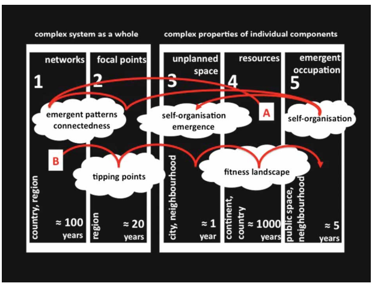
Figure: The Swarm Planning Framework - Here the landscape
operates as a swarm, so when the external pressure moves them away
from the equilibrium, then it simply shifts to another stable state through its self-organization capability and this
regime shift is visualized as a fitness landscape.
|
Swarm Planning: The development of a planning methodology
to deal with climate adaptation. |
- Swarm planning is a theoretical and practical approach
to deal with the uncertain future.
- Swarm planning theory is used in two pilot designs:
Post-carbon world and Pre-adaptive landscape
and is compared with regular planning process. The
results are presented in the form of two new landscapes: the
Zero-Fossil Region, where the design provides a spatial
framework for a complete renewable energy supply,
and the
Net Carbon Capture Landscape, in which adaptation and
mitigation strategies are designed to become carbon
positive.
- The comparison illuminates the potential advantages
of swarm planning to tackle the climate change threats.
- It increases the flexibility of spatial systems in
two ways: Assist the change in spatial land use over time;
and catalyse the emergence of autonomous and more
resilient developments.
|

| Swarm
Robotics: |
| Swarm Robotics is the study of how large number of
relatively simple physically embodied agents can be designed
such that a desired collective behaviour emerges from the
local interactions among agents and between the agents and
the environment. It has some special characteristics, which
are found in swarms of insects, that is, decentralised
control, lack of synchronisation, simple and quasi
identical members. |
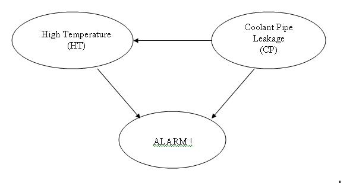
Fig: The DAG given above depicts a different model in
which the alarm will ring when activated by high temperature
and/or coolant water pipe leakage in the reactor.
|
Bayesian Network Structure Learning: |
- Bayesian Network / Belief Network is a
probabilistic directed acyclic graphical model that
represents a set of random variables and their conditional
dependencies.
- A Bayesian network could represent the
probabilistic relationship between diseases and symptoms.
Given symptoms, the network can be used to compute the
probability of the presence of various diseases.
- Bayesian networks that model the sequence of variables
(e.g. speech signals or protein sequences) are called
dynamic Bayesian networks.
- Two novel approaches (ChainACO and K2ACO) based on
chain structure model and K2 greedy search are being used
for for Bayesian network structure learning.
- It consists of
two phases: Construct chains (i.e. contruct the order of nodes
according to dependencies), Apply K2ACO to the best
ordering found and returns the best structure.
- Example: Given a
node ordering X1,X2,. . . ,Xn, we define the chain structure
by adding edges between successive nodes. Thus Xi is the
sole parent of Xi+1. Ei is the edge from Xi to Xi+1
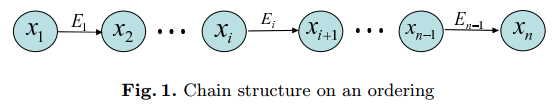
- ACO-based Bayesian network learning algorithm
outperforms greedy search and simulated annealing
algorithms.
|
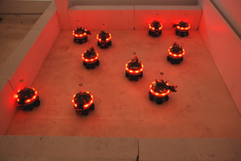
|
From Fireflies to Fault Tolerant Swarm: |
- It is a decentralized system that detects
non-operational robots in the swarm by engineering a flash
light system on the robots.
- This flash light system is similar to some
firefies species which can synchronize their flashing.
- This robotic approach creates the ability for
operational robots to flash in unison; failed robots can
thus be detected as those that will not flash in
synchrony with the rest of the robot team.
|
|
SINS: Sound INterfacing through the Swarm |
Fundamental concept of acoustic:
|
- Audio INterface is generally the hardware that
connects your microphones and other audio gear to your
computer. A typical audio interface converts analog signal
into the digital audio information that your computer can
process.
- Acoustic sensing is generally the sense of hearing.
- In SINS swarm system, every device will have a
wireless connection, hence leading to trillions of
connected devices and sensors known as the the sensory swarm.
- The SINS performance and lifetime objectives are to
achieve high-resolution acoustic activity detection and
beyond 1-meter accurate acoustic localization, while
achieving above 1-year lifetime on 1 button
cell battery.
|
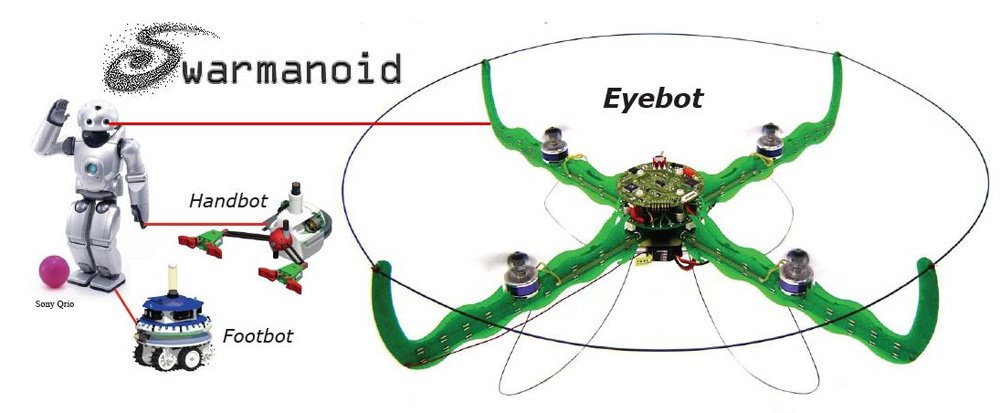
|
Swarmanoid: Towards Humanoid Robotic Swarms |
- The Swarmanoid is an autonomous group of
approximately 60 robots who work together like a SWAT
(acronym for "Special Weapons And Tactics") team to
accomplish the most mundane tasks.
- This machine swarm is made up of flying eye-bots,
gripping hand-bots, and wheeled foot-bots.
- The main scientific objective of this research
project is the design, implementation and control of a
novel distributed robotic system.
|
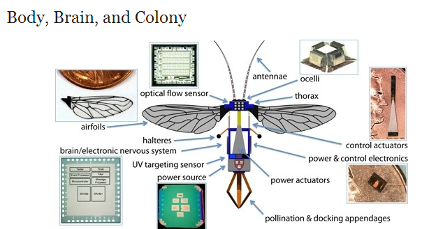
|
Flight of the Robobee: The Rise of Swarm Robotics |
- RoboBee is a tiny robot capable of tethered flight,
developed by a research robotics team at Harvard
University.
- A swarm of robotic bees
- RoboBees will be deployed on search and rescue
missions, or used for military surveillance.
- RoboBees could even pollinate crops and flowers,
thus replicate the behavior of their biological cousins.
|
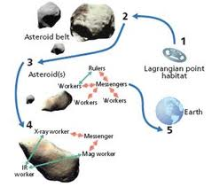
| ANTS / PAM: Autonomous Nanotechnological
Swarm - Mission Architecture / Prospecting Asteroid Mission
- ANTS application |
- The primary objective of PAM is the exploration of
the asteroid belt in search of resources and materials with
astrobiologically relevant origins and signatures.
- PAM plans to drive a carrier spaceship and have it
self-assemble and launch 1000 small exploration spacecrafts
(picocrafts) that are to travel through and analyze asteroid
belt.
- Each spacecraft includes a team leader (ruler), one or
more messengers, and a number of workers.
- The messengers are needed to connect the team
members when they cannot connect directly, due to a long
distance or a barrier.
- Once launched, spacecraft opportunistically
self-organise into several sub-swarms and simultaneously
analyse different asteroids over the several years belt
traversal.
- Each sub-swarm can repeatedly search for, detect
and navigate towards interesting asteroid targets; mesaure
and create 3D models of analysed asteroids; send adequate
asteroid models to an Earth center.
|

| Swarm
Tile: Human interface tiles that are designed to understand their
environment and react to various conditions. |
- The Cellular Intelligence system is a network
constructed of modular and human interface tiles that are
designed to understand their environment and react to
various conditions.
- Each cell or module is composed of smart sensing
technology and one or multiple LED actuators.
- Strategy: Each cell evaluates its surrounding
environment through sensing technology or through network
connections. If a stimulus is present, the information is
processed using an arduino microcontroller, which is an
open-source electronics prototyping platform, and an
appropriate response is sent back to the cell itself or to
another cell in the system and actuation is carried out
through LED lights.
|
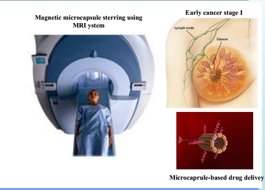Fig: NANOMA based breast cancer therapy
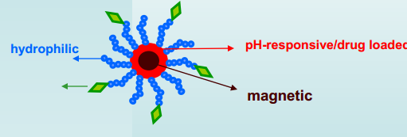 Fig: A drug delivery vector
| NANOMA: Nano-Actuators and
Nano-sensors for Medical Applications: |
- NANOMA aims at developing drug delivery
microrobotic systems composed of nanoActuators and
nanoSensors for the propulsion and navigation of
ferromagnetic microcapsules in the cardiovascular system
through the induction on magnetic gradients.
- New approach for breast cancer therapy based on
Nanoma concept:
- MRI based detection and tracking
- MRI based in-vivo propulsion and navigation
- Targeted drug delivery using functionalized
nanovectors
|
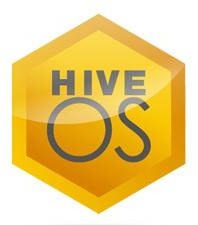
|
HiveOS Network Operating System: |
- HiveOS enables Aerohive devices to organize into
groups, or hives, which allows functionality like fast
roaming, user-based access control and fully stateful
firewall policies, as well as additional security and RF
networking features - all without the need for a
centralized or dedicated controller.
- HiveOS has two primary feature sets - Wi-fi
features and Routing features
- All Aerohive devices support the feature-rich
HiveOS Cooperative Control architecture.
- Aerohive provides a pure cloud-enabled management
solution for your wired and wireless network designed by
Apple Education Experts.
|
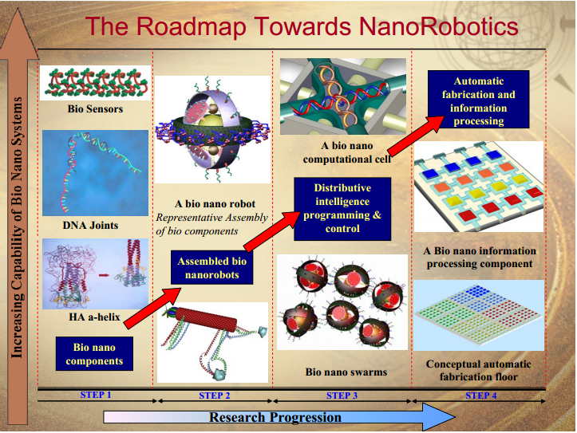
|
Nanorobots / Nanobots / DNA nanotechnology in Medical Applications: |
- It constitutes any smart structure capable of
actuation, sensing, signaling, information processing,
intelligence, manipulation and nano scale
(10-9 m) swarm behaviour.
- Nanorobots could propose solutions at the most of the
nanomedicine problems.
- NanoRobotics – An Example: Ultra-local Drug
Delivery
- The technology is known as DNA
origami, or alternately DNA nanotechnology.
|
| 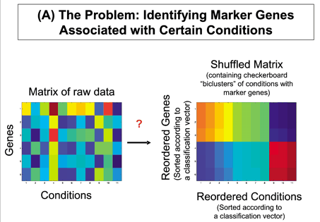 |
| Fig: Spectral Biclustering of Microarray Data:
Coclustering Genes and Conditions |
|
Biclustering of Microarray Gene Expression Data: |
- Gene expression is the process by which information
from a gene is used in the synthesis of a functional gene
product often termed as protein.
- In Gene regulatory network, genes have been
regarded as nodes in a network, with inputs being proteins
such as transcription factors, and outputs being the level
of gene expression.
- Microarray is a 2D array on a solid substrate.
Microarray gene expression data is a 2D array of gene
expression data under some condition. Microarray gene
expression data plays a vital role in biological processes, gene
regulation and disease mechanisms.
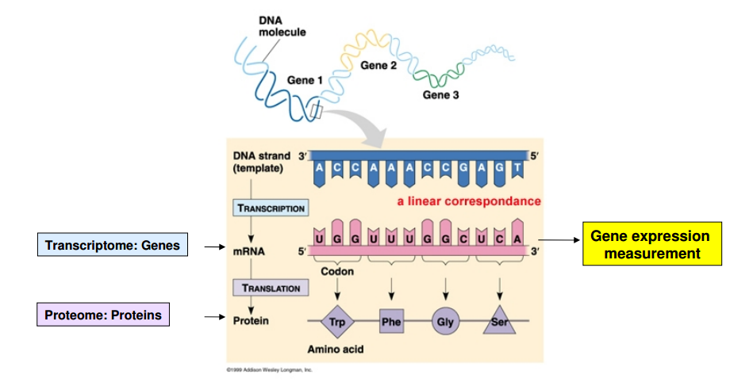
- In the Gene Expression context, clustering is
defined as the grouping of genes based on the similarity of
their condition feature profile whereas the biclustering
finds subsets of genes that show similar patterns under a
specific subset of experimental conditions or in short it
finds regulatory patterns. For example: for microarray
data, strong up-regulation of certain genes under a cancer
condition of a particular type. Such a simultaneous
classification of samples and features is called
biclustering (or co-clustering).
- The algorithmic concepts of the Particle Swarm
Optimization (PSO), Shuffled Frog Leaping (SFL) and Cuckoo
Search (CS) algorithms have been analyzed for the four
benchmark gene expression dataset and the experiment
results show that CS outperforms PSO and SFL for 3 datasets
and SFL give better performance in one dataset.
|
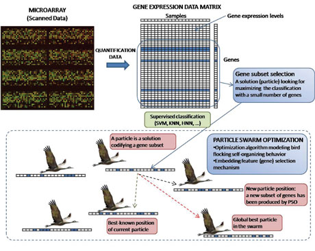
|
Swarm Intelligence Approach for Accurate Gene Selection in
DNA Microarrays: |
- It is the challenge of extracting the specific
genes responsible for the given illness.
- The goal is to minimise classification errors whilst
using the smallest possible set of genes to explain the
results provided by the given DNA microarray.
- This model consists of a particle swarm
optimization (PSO) algorithm, in which a feature selection
mechanism facilitates identification of small samples of
informative genes among thousands of genes.
|
|
Potential of Swarm Intelligence in Big Data Analytics: |
- The main focus is on data.
- The other three properties of big data analytics,
which include the high dimensionality of data, the
dynamical change of data, and the multi-objective
problems.
- Based on the combination of swarm intelligence and
data mining techniques, we can have better understanding of
the big data analytics problems, and then we can design more
effective algorithms to solve real-world big data analytics
problems.
|
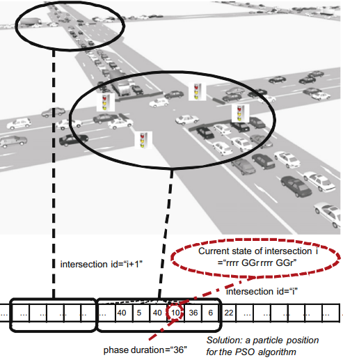
Swarm
Intelligence for Traffic Light Scheduling:
- In this context,
our main objective is to find optimized cycle programs (OCP)
for all the traffic lights located in a given urban area.
- Specifically, cycle programs are refereed to the time span a
set of traffic lights (in a junction) keep their color states.
- At the same time, these programs have to coordinate traffic
lights in adjacent intersections with the aim of improving
the global flow of vehicles circulating according to traffic
regulations.
|
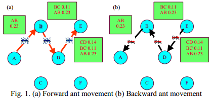
| AntNet: Ant-based Swarm Intelligence Algorithm for Routing in Communication Networks |
- It is an improvement of ant-based algorithms achieved via
dynamic programming.
- In the AntNet algorithm, routing is
determined by means of very complex interactions of forward
and backward network exploration agents (ants).
- The idea
behind this sub division of agents is to allow the backward
ants to utilize the useful information gathered by the
forward ants on their trip from source to destination.
- Based
on this principle, no node routing updates are performed by
the forward ants. Their only purpose in life is to report
network delay conditions to the backward ants, in the form of
trip times between each network node. The backward ants
inherit this raw data and use it to update the routing table
of the nodes.
|